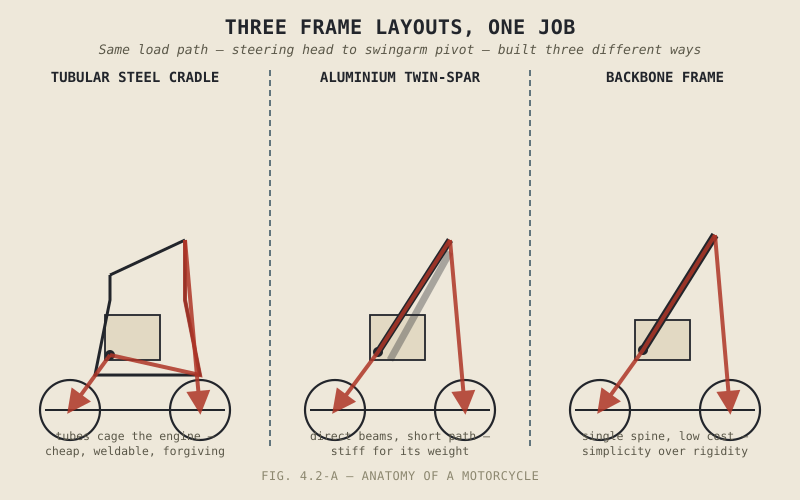

A racing team will spend a small fortune on a carbon-fibre frame that turns catastrophically brittle the instant it's pushed past its limit, while a budget commuter bike rolls off a steel frame that will bend, dent, and keep working long after a lesser structure would have simply given up. Neither choice is a mistake. They're answers to two completely different questions, and this chapter is about understanding which question a given frame was actually built to answer.
Chapter 4.1 named the chassis's structural job: holding everything together and transmitting load without failing unpredictably. This chapter covers how that job actually gets built — the layouts and materials manufacturers choose from, and what each choice trades against the others.
Frame Layouts: Different Shapes for the Same Job
A tubular steel cradle frame wraps steel tubes around and beneath the engine like a cage, cheap to produce, easy to repair by welding, and forgiving of the kind of impact that would crack a more brittle material outright — which is exactly why it remains common on budget and off-road-oriented motorcycles where cost and field repairability matter more than outright stiffness. A trellis frame takes the same steel-tube approach further, arranging thin tubes into a triangulated lattice that achieves genuinely impressive strength for its weight through geometry rather than bulk, at the cost of a more labour-intensive manufacturing process with many individual welds.
An aluminium twin-spar, or perimeter, frame takes a different structural approach entirely: two substantial beams run from the steering head, over or around the engine, to the swingarm pivot, forming a direct, short load path between the two points that matter most for handling precision. This layout is common on modern sportbikes specifically because it delivers excellent stiffness for its weight, though aluminium itself introduces the trade-off the next section covers in full. A backbone frame, by contrast, uses a single main structural spine running from the steering head to the swingarm pivot, favouring simplicity and low cost over the outright rigidity a twin-spar delivers — a natural fit for cruisers and other motorcycles not chasing maximum cornering precision. Monocoque and semi-monocoque designs go furthest in the other direction, integrating the frame and bodywork into a single load-bearing shell rather than building a separate frame underneath separate panels — very rigid and efficient for its size, but expensive to produce and difficult to modify or repair once damaged.

A tubular steel cradle frame, an aluminium twin-spar frame, and a backbone frame shown side by side, with their structural load paths from steering head to swingarm pivot highlighted on each.
Steel, Aluminium, and Carbon: The Real Trade Is Forgiveness
Steel is heavier per unit of stiffness than aluminium, but it fails gradually — a steel frame subjected to a stress beyond its design limit tends to bend or dent, giving a visible warning and often remaining rideable, and it can usually be repaired by a competent welder without exotic equipment. Aluminium is significantly lighter and stiffer for a given amount of material, which is exactly why it dominates modern high-performance frame construction, but it behaves differently under stress: aluminium fatigues and can crack rather than bend, sometimes with less visible warning before failure, and repairing it properly requires more specialized welding technique than steel does.
Carbon fibre pushes this trade to its extreme. Used on the most exotic racing and high-performance motorcycles, it offers an exceptional strength-to-weight ratio that neither steel nor aluminium can match, but when a carbon structure does fail, it tends to fail catastrophically and suddenly rather than bending or visibly cracking first, and conventional repair is often simply not possible, requiring outright replacement instead. None of these three materials is simply "the best" one; each represents a different, deliberate answer to how much weight and stiffness are worth trading against forgiveness, cost, and repairability.
Lighter, stiffer materials aren't a free upgrade over heavier, more forgiving ones. They trade a frame's ability to warn you and survive a mistake for outright performance — and which side of that trade is correct depends entirely on what the motorcycle is actually built to do.
A Common Misconception, Cleared Up Early
It's easy to assume that aluminium and carbon-fibre frames are simply superior to steel, since they're the materials associated with racing and premium performance motorcycles. Chapter 1.6 already warned against exactly this kind of reasoning applied to spec-sheet numbers generally, and it applies with equal force here: a steel frame's forgiving failure mode, low cost, and field repairability make it the genuinely correct choice for a touring bike ridden thousands of miles from a dealer, a budget commuter built to a tight price, or an off-road machine expected to absorb impacts a racing frame would never be asked to survive. Frame material is a specification matched to purpose, not a hierarchy with carbon fibre sitting unambiguously at the top.
Where This Leads
This chapter covered how a frame is built as a structure. It didn't touch the geometry that determines how a motorcycle actually steers — that begins at the steering head, the specific junction where the front fork meets the frame, and where the angles that shape a motorcycle's entire handling character are set. Chapter 4.3 turns there directly.
Key Concepts to Remember
- Tubular steel, trellis, aluminium twin-spar, backbone, and monocoque frame layouts each achieve the chassis's structural job through a different balance of cost, weight, stiffness, and manufacturing complexity.
- Steel fails gradually and repairs easily, aluminium is lighter and stiffer but can crack with less warning, and carbon fibre offers the best strength-to-weight ratio at the cost of sudden, often unrepairable failure.
- Frame material choice is a trade between weight and stiffness on one side and forgiveness, cost, and repairability on the other, not a simple hierarchy of quality.
- The right frame layout and material depend entirely on a motorcycle's intended purpose — racing performance, touring durability, off-road impact resistance, or budget affordability each favour a different answer.
Cross-References
| ← Ch. 4.1 | Named the chassis's structural job; this chapter covers the actual layouts and materials used to build it. |
| ← Ch. 1.6 | Warned against treating any single spec as unambiguously superior; this chapter applies that directly to frame material selection. |
| → Ch. 4.3 | Covers the steering head and front end geometry, the next stage in the chassis story this chapter's structural focus deliberately set aside. |
| → Ch. 4.9 | Returns to frame rigidity directly, building on the material trade-offs introduced here. |